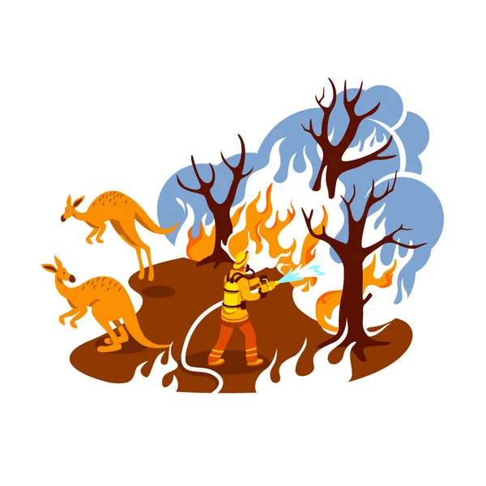

Web Developer
Python Developer
C++ Developer
Graphic Designer
Data Analyst
Brazil · 24y
Web Developer
Python Developer
C++ Developer
Graphic Designer
Data Analyst
Brazil · 24y

Data Science

C++

JavaScript
Intermediate

Python Core

Python Data
Structures

Python for
Beginners

Web
Development
Fundamentals

Python for
Finance

Intermediate
Python

Python for Data
Science

Responsive Web
Design
Introduction to
HTML

Introduction to
JavaScript

Introduction to
CSS
HTML

Web
Development
Python for
Data Analysis
"Unicórnio" é um termo usado na indústria de capital de risco para descrever uma startup de capital fechado com valor superior a US$ 1 bilhão. O termo foi popularizado pela primeira vez pela capitalista de risco Aileen Lee, fundadora da Cowboy Ventures, um fundo de capital de risco com sede em Palo Alto, Califórnia.
Unicórnios também podem se referir a um fenômeno de recrutamento no setor de recursos humanos (RH). Os gerentes de RH podem ter grandes expectativas para preencher um cargo, levando-os a procurar candidatos com qualificações superiores às exigidas para um cargo específico. Em essência, esses gerentes estão procurando um unicórnio, o que leva a uma desconexão entre seu candidato ideal e quem eles podem contratar do grupo de pessoas disponíveis.
O projeto Startups Unicórnios visa analisar um banco de dados com todas as startups que se tornaram unicórnios até o fim do ano de 2022, no link a seguir temos a análise simples feita em cima desse banco de dados. Link: Projeto Startups Unicórnios

A indústria de jogos eletrônicos experimentou um crescimento exponecial nas últimas décadas, tornando-se uma das áreas mais dinâmicas e lucrativas do entretenimento. Nesta análise, exploraremos as tendências, padrões de consumo e fatores que destacam a influências dos games no mercado financeiro. Link: Projeto Mercado de Games (PS4)

Nesse projeto iremos fazer uma simples análise do PIB de cada estado do Brasil fazendo um relatório geral para cada um deles. Link: Projeto Economia (RPC)
Nesse projeto iremos fazer uma análise de casos de incêndios pelo Brasil para verificar os meses que teve os maiores casos e os estados que tiveram mais ocorrências de incêndios. Link: Projeto Incêndios Florestais
Nesse projeto "Educação" temos a análise de uma base de dados onde alunos fizeram três tipos de provas, nas quais iremos analisar a influência do nível de escolaridade dos pais, curso preparatório e demais insights que possam influenciar no desempenho dos alunos. Link: Projeto Educação
Nesse projeto iremos fazer uma simples análise do comportamento das ações da Magalu durante o ano de 2021 e destacar alguns insights sobre essa base de dados. Link: Projeto Mercado Financeiro

Nesse projeto iremos abordar uma simples análise de comparação entre o tempo de experiência e o salário de um profissional e responder se a experiência influência no salário. Link: Projeto RH
Nesse projeto iremos analisar o comportamento das ações relacionadas ao bitcoin desde seu lançamento em 2017 até o ano de 2022. Link: Projeto Bitcoin

Nesse projeto iremos fazer uma simples análise das ações das empresas de energia no Brasil. Link: Projeto Empresas de Energia